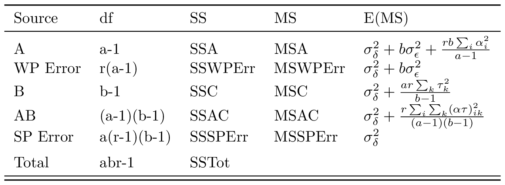
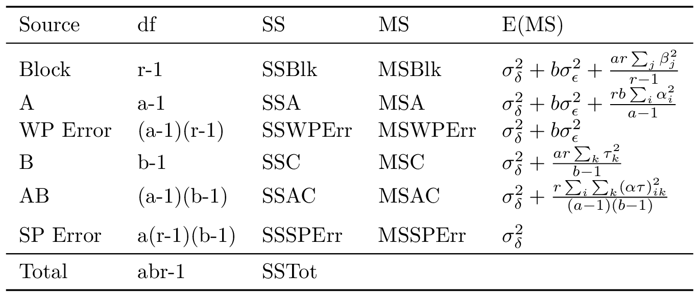
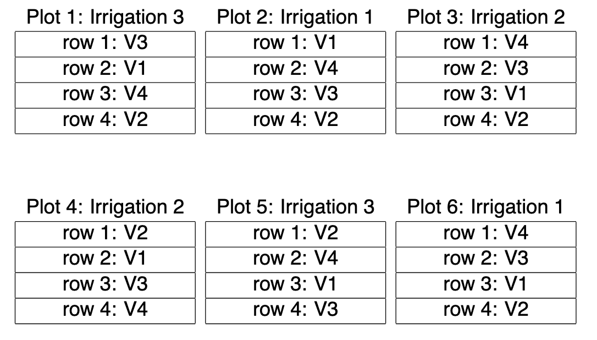
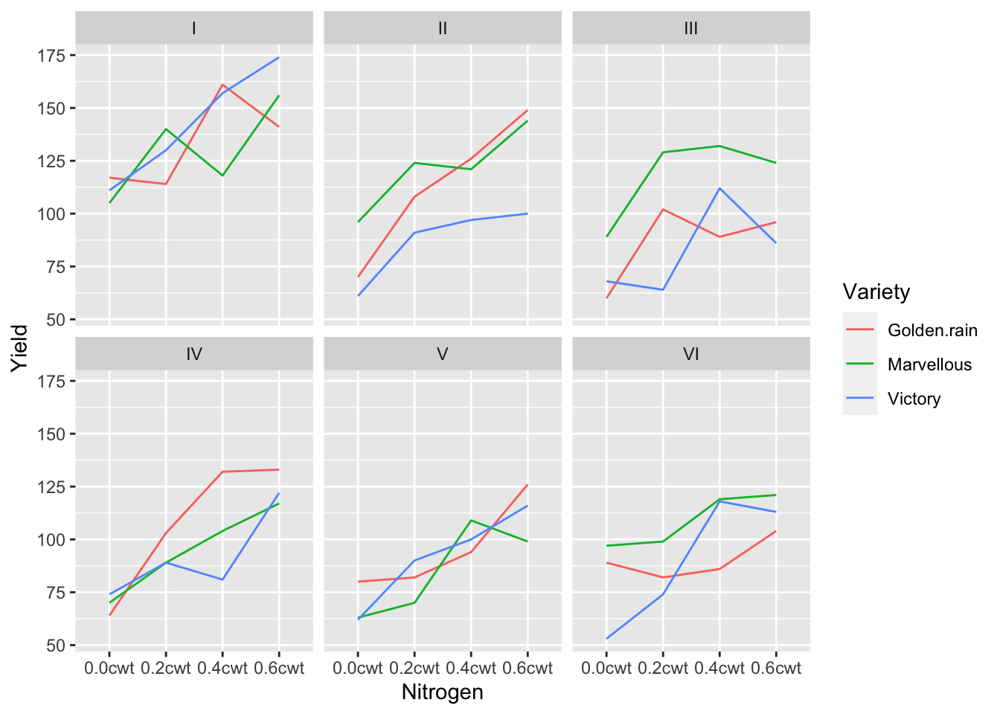
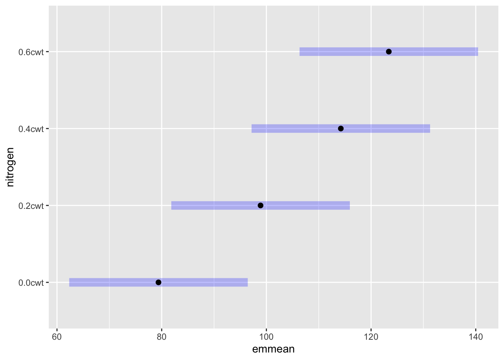
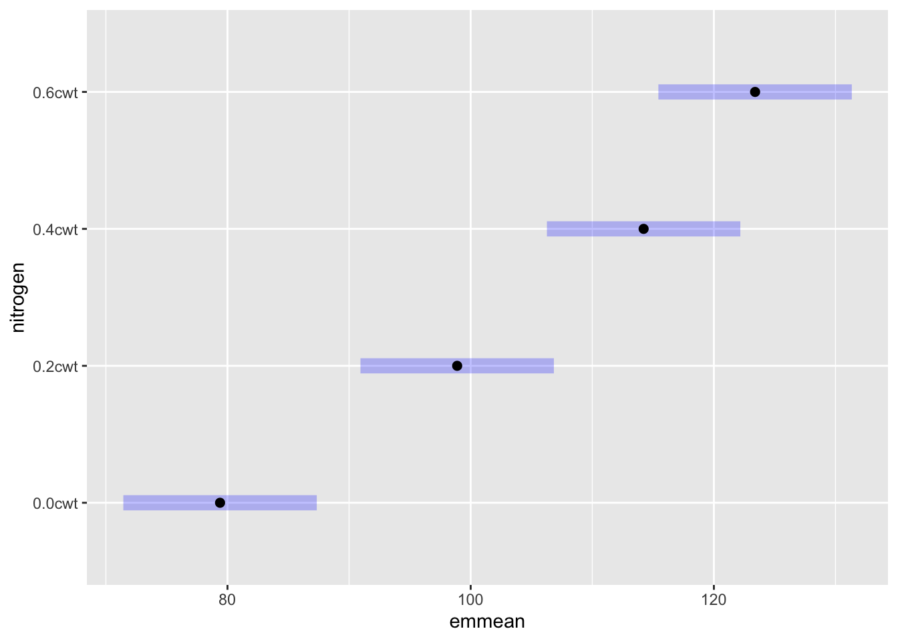
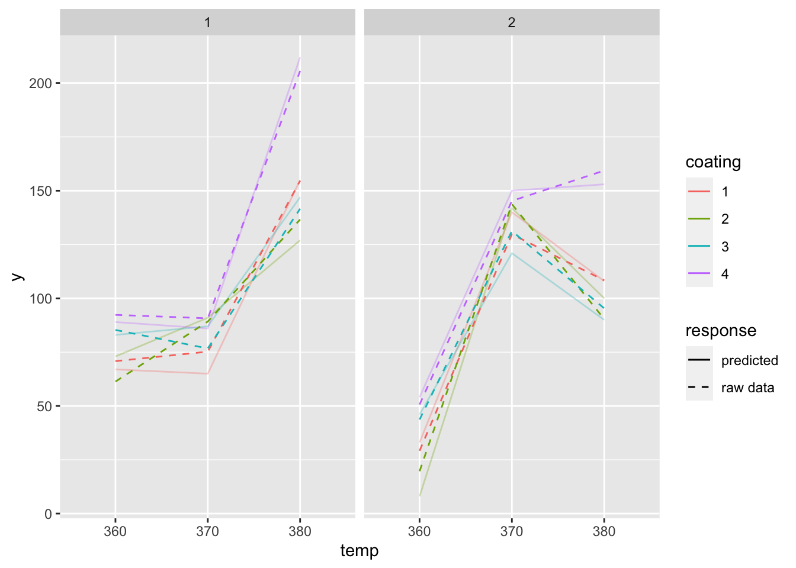

Types of units in Design and Analysis of Experiments (DOE)
Experimental Unit (EU) - the smallest unit to which a treatment is applied. Experiments can have more than one experimental unit when studying more than one treatment factor. This results in split-plot designs.
Sampling Unit - A unit that makes up the population to be modeled. Sampling units are used to make observations.
Observational Unit - The unit from which an observation is made.
Types of factors in DOE
Treatment - normally a factor of interest to the experimentor.
Blocking - also regarded as a factor, but a known source of variation. This differs from treatment factor in that it CHANGES THE RANDOMIZATION of the experiement.
A note on the word replication, I try to avoid this word, as it is heavily abused and vague. Sometimes clients mean subsamples, sometimes they mean a blocking factor, sometimes they mean experimental units. “I replicated this experiment 3 times”. If they replicated it over years, this would imply blocking in time. “I have 3 replicates of data”, implies they may have 3 data points from the same experimental unit.
Another note on “blocking”: Blocking is a design mechanism of efficiency that stems from the REAL WORLD, not mathematics. Clients often come with “blocked” experiments because they believe that just including block will make the design more efficient. “Why did you block on this variable?” “blocking is more efficient and I had extra samples”. If you don’t block on anything useful, it will actually make the design less efficient, and you’re better off with a CRD.
11.1.1 Examples for definitions
Students in classroom
Suppose we’re studying methods of teaching (treatment factor) on student achievement. The experimental unit is a classroom, because the teaching method is applied to the whole classroom. A sampling unit is a student from that classroom, and the observational unit is some test score of the student, or some measured response from the student.
Plants in a field
When we study a fertilizer (treatment factor) on the health of a plant, we are likely not just planting 1 plant, but many in a row for which fertilizer is applied. The row is the experimental unit, a plant is the sampling unit, and the observational unit is making some measurement like root length on that plant.
11.2 Fischer Principles of Design
Randomization - necessary for validity of error variance estimates.
Replication - allows for an estimate of variance.
Blocking (stratification) - allows for efficient experimentation
12 Hasse Diagrams
start with M term on top, stands for grand mean
next row is all factors not nested in any term, all lines up to M.
nested factors go directly below what it’s nested in
The purpose of this section was an experiement following doing a Finley-Wilkenson regression for a client, in which I was considering calculating multiple ways of calculating the “environmental index”. The point here is a little subtle: The fitted values from a two-way anova model are not the same as the raw calculated grouped means. The upshot of this statement is that (ignoring the replication) \hat\alpha_1 + \hat\beta_1 = \bar{y}_{1.} + \bar{y}_{.1} \neq y_{11}. (The statement is somewhat adhoc, without defining contrasts estimate, but this is the cell means encoding).
After looking at this, it’s obvious, but the fact that in simple linear regression models, the fitted line goes through the mean, and even in one way anova models, the fitted values are directly the cell means. I just forgot the fact that this changes with two way models.
Imagine the following ways we could slice this problem
calculating the raw means by group.
calculating the fitted values by two way anova w/o interaction
calculating the fitted values by one way anova w/ interaction
fitting several one-way linear models subsetting the data into groups over the other level
Code
data("oats", package ="MASS")# calculate raw meansraw_mean <- oats %>%group_by(V, N) %>%summarize(mean_Y =mean(Y)) %>%arrange(V, N)# additivemod <-lm(Y ~ V + N, data = oats)emm <-emmeans(mod, specs =c("V", "N"))additive_mean <- emm %>%as.data.frame() %>%select(V, N, emmean) %>%arrange(V, N)# additive with interactionmod2 <-lm(Y ~ V + N + V:N, data = oats)emm2 <-emmeans(mod, specs =c("V", "N"))inter_mean <- emm2 %>%as.data.frame() %>%select(V,N,emmean) %>%arrange(V,N)# several one-way linear modelsmod_list <-lmList(Y~ N | V, data = oats)new_dat <- oats %>%distinct(V, N) %>%arrange(V, N)list_mean <- new_dat %>%add_column(fitted =predict(mod_list, newdata = new_dat))# Manual construction of fitted from marginal meansN_means <- oats %>%group_by(N) %>%summarize(N_mean =mean(Y)) %>%as.data.frame()V_means <- oats %>%group_by(V) %>%summarize(V_mean =mean(Y)) %>%as.data.frame()overall_mean <- oats %>%pull(Y) %>%mean()# calculate y_i. + y_.j - y_.. for all ijmanual_mean <- N_means %>%crossing(V_means) %>%mutate(fitted = N_mean + V_mean - overall_mean) %>%arrange(V, N)bind_cols(new_dat,tibble(raw = raw_mean$mean_Y,additive = additive_mean$emmean,interaction = inter_mean$emmean,subset_oneway = list_mean$fitted,manual_fitted = manual_mean$fitted))
Looking at the output, additive and interaction models don’t change the estimated marginal means. The one-way with subset matches the raw mean values by group because those one way models will go through the mean, and thus, fitting them seperately will those results. The Manual way of fitting calculated marginal means by Variety and Nitrogen separately, and then adds them in an “outer” type fashion.
14 Blocking Designs
At its core, one should understand the features of a two way anova in order to understand what blocking does to the covariate.
14.1 Randomized Complete Block Design (RCBD)
Summary
RCBD’s assume that the blocking factor is additive. That might be a wrong assumption.
The classic split plot design presented in most textbooks is one in which the whole plot experimental units (wpeu) treated by factor A (with a levels) have r replications (either in the form of block replicates or identical replicates), and the sub-plot experimental units (speu) is completely randomized within the whole plot.
The defining feature of split plot designs is that there are multiple sizes of experimental units.


15.1 Oats Example
This is normally analyzed as 1 factor RCBD in whole plot, 1 factor RCD in subplot. We will use this example in two ways, the simple way in which we ignore the blocking factor, and the natural way with the blocking factor.
B - Blocks (6 whole plots)
V - Varieties (3 levels, whole plot factor)
N - Nitrogen (4 levels, sub plot factor)
Y - Yields in 1/4 acre (from subplot)

Figure: This image shows 2 out of the 6 blocks (as rows) of the experiment.
yield variety nitrogen block field123 field
1 111 Victory 0.0cwt I 1 1
2 130 Victory 0.2cwt I 1 1
3 157 Victory 0.4cwt I 1 1
4 174 Victory 0.6cwt I 1 1
5 117 Golden.rain 0.0cwt I 2 2
6 114 Golden.rain 0.2cwt I 2 2
7 161 Golden.rain 0.4cwt I 2 2
8 141 Golden.rain 0.6cwt I 2 2
9 105 Marvellous 0.0cwt I 3 3
10 140 Marvellous 0.2cwt I 3 3
11 118 Marvellous 0.4cwt I 3 3
12 156 Marvellous 0.6cwt I 3 3
13 61 Victory 0.0cwt II 1 4
14 91 Victory 0.2cwt II 1 4
15 97 Victory 0.4cwt II 1 4
16 100 Victory 0.6cwt II 1 4
17 70 Golden.rain 0.0cwt II 2 5
18 108 Golden.rain 0.2cwt II 2 5
19 126 Golden.rain 0.4cwt II 2 5
20 149 Golden.rain 0.6cwt II 2 5
21 96 Marvellous 0.0cwt II 3 6
22 124 Marvellous 0.2cwt II 3 6
23 121 Marvellous 0.4cwt II 3 6
24 144 Marvellous 0.6cwt II 3 6
25 68 Victory 0.0cwt III 1 7
26 64 Victory 0.2cwt III 1 7
27 112 Victory 0.4cwt III 1 7
28 86 Victory 0.6cwt III 1 7
29 60 Golden.rain 0.0cwt III 2 8
30 102 Golden.rain 0.2cwt III 2 8
31 89 Golden.rain 0.4cwt III 2 8
32 96 Golden.rain 0.6cwt III 2 8
33 89 Marvellous 0.0cwt III 3 9
34 129 Marvellous 0.2cwt III 3 9
35 132 Marvellous 0.4cwt III 3 9
36 124 Marvellous 0.6cwt III 3 9
37 74 Victory 0.0cwt IV 1 10
38 89 Victory 0.2cwt IV 1 10
39 81 Victory 0.4cwt IV 1 10
40 122 Victory 0.6cwt IV 1 10
41 64 Golden.rain 0.0cwt IV 2 11
42 103 Golden.rain 0.2cwt IV 2 11
43 132 Golden.rain 0.4cwt IV 2 11
44 133 Golden.rain 0.6cwt IV 2 11
45 70 Marvellous 0.0cwt IV 3 12
46 89 Marvellous 0.2cwt IV 3 12
47 104 Marvellous 0.4cwt IV 3 12
48 117 Marvellous 0.6cwt IV 3 12
49 62 Victory 0.0cwt V 1 13
50 90 Victory 0.2cwt V 1 13
51 100 Victory 0.4cwt V 1 13
52 116 Victory 0.6cwt V 1 13
53 80 Golden.rain 0.0cwt V 2 14
54 82 Golden.rain 0.2cwt V 2 14
55 94 Golden.rain 0.4cwt V 2 14
56 126 Golden.rain 0.6cwt V 2 14
57 63 Marvellous 0.0cwt V 3 15
58 70 Marvellous 0.2cwt V 3 15
59 109 Marvellous 0.4cwt V 3 15
60 99 Marvellous 0.6cwt V 3 15
61 53 Victory 0.0cwt VI 1 16
62 74 Victory 0.2cwt VI 1 16
63 118 Victory 0.4cwt VI 1 16
64 113 Victory 0.6cwt VI 1 16
65 89 Golden.rain 0.0cwt VI 2 17
66 82 Golden.rain 0.2cwt VI 2 17
67 86 Golden.rain 0.4cwt VI 2 17
68 104 Golden.rain 0.6cwt VI 2 17
69 97 Marvellous 0.0cwt VI 3 18
70 99 Marvellous 0.2cwt VI 3 18
71 119 Marvellous 0.4cwt VI 3 18
72 121 Marvellous 0.6cwt VI 3 18

15.1.1 Without blocking
Here we ignore the blocking factor. Suppose we just replicated the whole plot experimental unit a few more times. This means that we have 6 replication units for whole plot treatments, and theoretically get a better estimate for “Variety”
\eta_{k(i)} is the whole plot error k replicates nested inside the whole plot factor
\beta_j - subplot factor (nitrogen)
(\alpha\beta)_{ij} - interaction of whole plot factor and subplot factor
\varepsilon_{ijk} - split-plot level random error
lm (wrong)
Code
# anova table for factors for sum squares. These give identical tables.# oats_lm <- lm(yield~nitrogen*variety + block:variety, data = oats) # same table, different way of specifying whole plot labelsoats_lm <-lm(yield ~ nitrogen*variety + field, data = oats)anova(oats_lm)
Analysis of Variance Table
Response: yield
Df Sum Sq Mean Sq F value Pr(>F)
nitrogen 3 20020.5 6673.5 37.6856 2.458e-12 ***
variety 2 1786.4 893.2 5.0438 0.01056 *
field 15 21888.6 1459.2 8.2404 1.609e-08 ***
nitrogen:variety 6 321.7 53.6 0.3028 0.93220
Residuals 45 7968.7 177.1
---
Signif. codes: 0 '***' 0.001 '**' 0.01 '*' 0.05 '.' 0.1 ' ' 1
Note in this table, variety is tested over the wrong denominator. It should be tested wrt to the whole plot error term.
aov
Code
# aov specifying whole plot error term# oats_aov <- aov(yield~ nitrogen*variety + Error(block:variety), data = oats) # gives warning, but correctoats_aov <-aov(yield ~ nitrogen*variety +Error(field), data = oats)summary(oats_aov)
Error: field
Df Sum Sq Mean Sq F value Pr(>F)
variety 2 1786 893.2 0.612 0.555
Residuals 15 21889 1459.2
Error: Within
Df Sum Sq Mean Sq F value Pr(>F)
nitrogen 3 20020 6673 37.686 2.46e-12 ***
nitrogen:variety 6 322 54 0.303 0.932
Residuals 45 7969 177
---
Signif. codes: 0 '***' 0.001 '**' 0.01 '*' 0.05 '.' 0.1 ' ' 1
Notice that variety has a very different p-value here when tested over the correct denominator, in contrast to the earlier lm table.
aov (wrong)
Code
# Incorrect labeling of fieldoats_aov <-aov(yield~nitrogen*variety +Error(field123), data = oats)summary(oats_aov)
Error: field123
Df Sum Sq Mean Sq
variety 2 1786 893.2
Error: Within
Df Sum Sq Mean Sq F value Pr(>F)
nitrogen 3 20020 6673 13.411 8.37e-07 ***
nitrogen:variety 6 322 54 0.108 0.995
Residuals 60 29857 498
---
Signif. codes: 0 '***' 0.001 '**' 0.01 '*' 0.05 '.' 0.1 ' ' 1
This above table is incorrect, since we’re not labeling our fields differently. We don’t have appropriate replicates for variety, and thus we can’t estimate the error term as we have specified.
lmer
Code
# lmer way for split plot# oats_lmer <- lmer(yield ~ nitrogen*variety + (1|block:variety))# oats_lmer <- lmer(yield ~ nitrogen*variety + (1|block:field123))oats_lmer <-lmer(yield ~ nitrogen*variety + (1|field), data = oats)summary(oats_lmer)
# Type III tests, here it's an exact test, so no ambiguity# anova(oats_lmer, ddf = "Kenward-Roger")# Anova(oats_lmer, type = "III", test.statistic = "F")anova(oats_lmer, ddf ="Satterthwaite")
Type III Analysis of Variance Table with Satterthwaite's method
Sum Sq Mean Sq NumDF DenDF F value Pr(>F)
nitrogen 20020.5 6673.5 3 45 37.6856 2.458e-12 ***
variety 216.8 108.4 2 15 0.6121 0.5552
nitrogen:variety 321.8 53.6 6 45 0.3028 0.9322
---
Signif. codes: 0 '***' 0.001 '**' 0.01 '*' 0.05 '.' 0.1 ' ' 1
We note that this gives identical results as aov.
Since the interaction doesn’t seem to be significant, we’d probably drop that term from the model and we would have the additive model as our final model for this data.
Now that we consider blocking, the whole plot experimental unit no longer has replication. Thus, we cannot test the interaction of block and variety. Instead, we use the interaction term as the surrotate error term for whole plots. You might ask, what if I wanted to analyze the whole plot experimental error?
Again, the analysis here ignores that there is a different replication for the whole plots, and so block and variety are tested with the wrong denominator. Nonetheless, it is still useful to have the mean squared errors. We drop the interaction
aov
Code
# Fixed block effect# oats_aov_block_fixed <- aov(yield~ block + variety*nitrogen + Error(block:variety), data = oats) # singular error, but correct# oats_aov_block_fixed <- aov(yield~ block + variety*nitrogen + Error(block:field123), data = oats) # singular error, but correctoats_aov_block_fixed <-aov(yield~ block + variety*nitrogen +Error(field), data = oats) # need to number each whole plot separatelysummary(oats_aov_block_fixed)
Error: field
Df Sum Sq Mean Sq F value Pr(>F)
block 5 15875 3175 5.280 0.0124 *
variety 2 1786 893 1.485 0.2724
Residuals 10 6013 601
---
Signif. codes: 0 '***' 0.001 '**' 0.01 '*' 0.05 '.' 0.1 ' ' 1
Error: Within
Df Sum Sq Mean Sq F value Pr(>F)
nitrogen 3 20020 6673 37.686 2.46e-12 ***
variety:nitrogen 6 322 54 0.303 0.932
Residuals 45 7969 177
---
Signif. codes: 0 '***' 0.001 '**' 0.01 '*' 0.05 '.' 0.1 ' ' 1
Code
# Random block effects# oats_aov_block_random <- aov(yield~ block + variety*nitrogen + Error(block)+ Error(block:variety), data = oats) # the below is technically short for this, but aov only allows 1 `Error` term, so you must specify like that.# oats_aov_block_random <- aov(yield~ block + variety*nitrogen + Error(block/field), data = oats) # gives singular error, but correct.# oats_aov_block_random <- aov(yield~ block + variety*nitrogen + Error(block/field123), data = oats) # aov prefers numbered 123 across the blocksoats_aov_block_random <-aov(yield~ block + variety*nitrogen +Error(block/variety), data = oats)summary(oats_aov_block_random)
Error: block
Df Sum Sq Mean Sq
block 5 15875 3175
Error: block:variety
Df Sum Sq Mean Sq F value Pr(>F)
variety 2 1786 893.2 1.485 0.272
Residuals 10 6013 601.3
Error: Within
Df Sum Sq Mean Sq F value Pr(>F)
nitrogen 3 20020 6673 37.686 2.46e-12 ***
variety:nitrogen 6 322 54 0.303 0.932
Residuals 45 7969 177
---
Signif. codes: 0 '***' 0.001 '**' 0.01 '*' 0.05 '.' 0.1 ' ' 1
Note that we don’t get a p-value for the random block now, since block gets its own error term. we also get the same results from when we treated block as fixed.
Since there’s no interaction between variety and nitrogen, we can drop that from the model and get this as the final model.
Code
# No interactionoats_aov_block_fixed_additive <-aov(yield~ block + nitrogen + variety +Error(block/variety), data = oats)summary(oats_aov_block_fixed_additive)
Error: block
Df Sum Sq Mean Sq
block 5 15875 3175
Error: block:variety
Df Sum Sq Mean Sq F value Pr(>F)
variety 2 1786 893.2 1.485 0.272
Residuals 10 6013 601.3
Error: Within
Df Sum Sq Mean Sq F value Pr(>F)
nitrogen 3 20020 6673 41.05 1.23e-13 ***
Residuals 51 8290 163
---
Signif. codes: 0 '***' 0.001 '**' 0.01 '*' 0.05 '.' 0.1 ' ' 1
lmer
Code
# Mixed model approach, fixed block # oats_lmer_block_fixed <- lmer(yield~ block + variety*nitrogen + (1 | block:variety), data = oats)oats_lmer_block_fixed <-lmer(yield~ block + variety*nitrogen + (1| field), data = oats)anova(oats_lmer_block_fixed)
Type III Analysis of Variance Table with Satterthwaite's method
Sum Sq Mean Sq NumDF DenDF F value Pr(>F)
block 4675.0 935.0 5 10 5.2800 0.01244 *
variety 526.1 263.0 2 10 1.4853 0.27239
nitrogen 20020.5 6673.5 3 45 37.6856 2.458e-12 ***
variety:nitrogen 321.8 53.6 6 45 0.3028 0.93220
---
Signif. codes: 0 '***' 0.001 '**' 0.01 '*' 0.05 '.' 0.1 ' ' 1
Code
# block random# oats_lmer_block_random <- lmer(yield~ variety*nitrogen + (1 | block) + (1|block:variety), data = oats)# oats_lmer_block_random <- lmer(yield~ variety*nitrogen + (1 | block/field123), data = oats) # shorthand# oats_lmer_block_random <- lmer(yield~ variety*nitrogen + (1 | block/field), data = oats) # as long as block:field reduces to a unique 18 terms# oats_lmer_block_random <- lmer(yield~ variety*nitrogen + (1 | block) + (1|field), data = oats) # as long as block:field reduces to a unique 18 terms, we can specify random error however.oats_lmer_block_random <-lmer(yield~ variety*nitrogen + (1| block/variety), data = oats) # shorthandanova(oats_lmer_block_random)
Type III Analysis of Variance Table with Satterthwaite's method
Sum Sq Mean Sq NumDF DenDF F value Pr(>F)
variety 526.1 263.0 2 10 1.4853 0.2724
nitrogen 20020.5 6673.5 3 45 37.6857 2.458e-12 ***
variety:nitrogen 321.7 53.6 6 45 0.3028 0.9322
---
Signif. codes: 0 '***' 0.001 '**' 0.01 '*' 0.05 '.' 0.1 ' ' 1
Since interaction is non significant, and treating block as random doesn’t change the analysis, we drop interaction from model for the final model.
If we want to average across the random whole plots, and have an estimate for the variability of nitrogen, we are now considering two sources of variability, the subplot error (residual) and whole plot error. Thus, this is loosely a linear combination of chi-square distributions, thus we need a df approximation.
Code
# the manual calculation of the satterthwaite approximationoats_lmer_block_fixed_additive_emm <-emmeans(oats_lmer_block_fixed_additive, specs ="nitrogen", lmer.df ="satterthwaite")oats_lmer_block_fixed_additive_emm
In the output, we note a partial degree of freedom. How do we use satterthwaite formula to get this df approximation? (and subsequently, the standard error used to calculate the confidence limits). Nitrogen is indexed by j, so we are ultimately interested in \overline{Y_{\cdot j \cdot}}, this is the “emmean” estimate for average nitrogen, in which we average over variety and block.
Now we also know that the mean squared errors have chi-squared distributions (because the are quadratic forms). This is where satterwaithe formula comes in. Now we just need to plug in the squared errors
# with mean squared valueswpmse <-601.3# Whole plot Mean Squarewpdf <-10# Whole plot degrees of freedomspmse <-162.6# sub plot mean squaredspdf <-51# sub plot degrees of freedom# satterwaithe approximationapprox_df <- (1/72*wpmse +3/72*spmse)^2/ ((1/72*wpmse)^2/ wpdf + (3/72*spmse)^2/ spdf)approx_df
We can see now all the values match up with emmeans!
emmeans plot (misleading)
This is a criticism from Should blocks be random or fixed? for when we treat blocks as random. He concludes by stating his preference for fixed blocks.
The following graphic is a useful summarization for showing levels of nitrogen change, and often would like to show error bars around those mean estimates. However, when we treat blocks as random (field), we are adding an additional source of variation to the standard error estimates of the mean. When we plot it, the error bars thus look huge, compared to the fixed effects case. Whereas the significance for the difference between the two groups are the same. Even though they overlap, the difference can still be significant.
Code
pairs(oats_lmer_block_random_additive_emm)
contrast estimate SE df t.ratio p.value
0.0cwt - 0.2cwt -19.50 4.25 51 -4.588 0.0002
0.0cwt - 0.4cwt -34.83 4.25 51 -8.196 <.0001
0.0cwt - 0.6cwt -44.00 4.25 51 -10.353 <.0001
0.2cwt - 0.4cwt -15.33 4.25 51 -3.608 0.0038
0.2cwt - 0.6cwt -24.50 4.25 51 -5.765 <.0001
0.4cwt - 0.6cwt -9.17 4.25 51 -2.157 0.1493
Results are averaged over the levels of: variety
Degrees-of-freedom method: satterthwaite
P value adjustment: tukey method for comparing a family of 4 estimates
Code
plot(oats_lmer_block_random_additive_emm)

Code
pairs(oats_lmer_block_fixed_additive_emm)
contrast estimate SE df t.ratio p.value
0.0cwt - 0.2cwt -19.50 4.25 51 -4.588 0.0002
0.0cwt - 0.4cwt -34.83 4.25 51 -8.196 <.0001
0.0cwt - 0.6cwt -44.00 4.25 51 -10.353 <.0001
0.2cwt - 0.4cwt -15.33 4.25 51 -3.608 0.0038
0.2cwt - 0.6cwt -24.50 4.25 51 -5.765 <.0001
0.4cwt - 0.6cwt -9.17 4.25 51 -2.157 0.1493
Results are averaged over the levels of: block, variety
Degrees-of-freedom method: satterthwaite
P value adjustment: tukey method for comparing a family of 4 estimates
Code
plot(oats_lmer_block_fixed_additive_emm)

15.2 Steel Example
Based on (Box et. al 2005) Experiment designed to study the corrosion resistance of steel bars treated with 4 coatings, C_1, C_2, C_3, C_4 at three furnace temperatures 360^{\circ}C, 370^{\circ}C,380^{\circ}C. Furnace temperature is considered a hard to change factor because of the time it takes to reset the furnace and reach equilibriu temperature. Once the equilibrium temperature is reached, 4 steel bars with randomly assigned coating are randomly positioned in the furnace and heated. The first three temperatures were run on day 1, and the second three temperatures were run on day 2.
If we pretend that the randomization was not done with day as a blocking factor, then we have a split plot with CRD in whole plots and CRD in subplots.
15.2.1 with day block
Code
# just get df table, and mean squares# wrong denominator for temp effectsteel_lm_block <-lm(y ~ day + coating*temp + day:temp, data = steel)anova(steel_lm_block)
Analysis of Variance Table
Response: y
Df Sum Sq Mean Sq F value Pr(>F)
day 1 782.0 782.0 6.2794 0.033538 *
coating 3 4289.1 1429.7 11.4798 0.001977 **
temp 2 26519.2 13259.6 106.4674 5.446e-07 ***
coating:temp 6 3269.7 545.0 4.3757 0.024066 *
day:temp 2 13657.6 6828.8 54.8314 9.113e-06 ***
Residuals 9 1120.9 124.5
---
Signif. codes: 0 '***' 0.001 '**' 0.01 '*' 0.05 '.' 0.1 ' ' 1
Code
# correct split plot analysissteel_aov_block <-aov(y ~ day + coating*temp +Error(day:temp), data = steel)
Warning in aov(y ~ day + coating * temp + Error(day:temp), data = steel):
Error() model is singular
Code
summary(steel_aov_block)
Error: day:temp
Df Sum Sq Mean Sq F value Pr(>F)
day 1 782 782 0.115 0.767
temp 2 26519 13260 1.942 0.340
Residuals 2 13658 6829
Error: Within
Df Sum Sq Mean Sq F value Pr(>F)
coating 3 4289 1429.7 11.480 0.00198 **
coating:temp 6 3270 545.0 4.376 0.02407 *
Residuals 9 1121 124.5
---
Signif. codes: 0 '***' 0.001 '**' 0.01 '*' 0.05 '.' 0.1 ' ' 1
Code
# correct split plot analysissteel_lmer_block <-lmer(y~ day + coating*temp + (1|temp:day), data = steel)anova(steel_lmer_block)
Type III Analysis of Variance Table with Satterthwaite's method
Sum Sq Mean Sq NumDF DenDF F value Pr(>F)
day 14.3 14.26 1 2 0.1145 0.767278
coating 4289.1 1429.71 3 9 11.4798 0.001977 **
temp 483.7 241.83 2 2 1.9417 0.339937
coating:temp 3269.7 544.96 6 9 4.3757 0.024066 *
---
Signif. codes: 0 '***' 0.001 '**' 0.01 '*' 0.05 '.' 0.1 ' ' 1
15.2.2 without day block
Code
# without blockingsteel_lmer <-lmer(y~coating*temp + (1|temp:day), data = steel)anova(steel_lmer)
Type III Analysis of Variance Table with Satterthwaite's method
Sum Sq Mean Sq NumDF DenDF F value Pr(>F)
coating 4289.1 1429.71 3 9 11.4798 0.001977 **
temp 686.2 343.09 2 3 2.7548 0.209321
coating:temp 3269.7 544.96 6 9 4.3757 0.024066 *
---
Signif. codes: 0 '***' 0.001 '**' 0.01 '*' 0.05 '.' 0.1 ' ' 1

15.2.3 with block:treatment
We just check the model seperating the block x sp-treatment out from the residual term.
Code
steel_lmer_block_interact <-lmer(y ~ day + coating*temp + day:coating + (1|temp:day), data = steel)anova(steel_lmer_block_interact)
Type III Analysis of Variance Table with Satterthwaite's method
Sum Sq Mean Sq NumDF DenDF F value Pr(>F)
day 16.5 16.54 1 2.0001 0.1145 0.767273
coating 4289.1 1429.71 3 6.0000 9.8969 0.009714 **
temp 561.0 280.51 2 2.0001 1.9418 0.339922
coating:temp 3269.8 544.96 6 6.0000 3.7724 0.065509 .
day:coating 254.1 84.71 3 6.0000 0.5864 0.645799
---
Signif. codes: 0 '***' 0.001 '**' 0.01 '*' 0.05 '.' 0.1 ' ' 1
15.2.4 fake data
Here I try to simulate data
Code
fake_y <-function(day, coating, temp){ temp <-scale(as.numeric(temp), scale = F) day <-as.numeric(day) coating <-as.numeric(coating) n <-length(day)2* day +2* temp + (day*temp)*rnorm(n, mean =2) + .2*coating +20*day*coating +rnorm(n)}fake_steel <- steel %>%add_column(fake_y =fake_y(steel$day, steel$coating, steel$temp))
Warning in aov(fake_y ~ (day + coating + temp)^2 - day:temp + Error(day:temp), :
Error() model is singular
Code
fake_steel_aov
Call:
aov(formula = fake_y ~ (day + coating + temp)^2 - day:temp +
Error(day:temp), data = fake_steel)
Grand Mean: 86.29519
Stratum 1: day:temp
Terms:
day temp Residuals
Sum of Squares 21602.92 41460.73 1605.22
Deg. of Freedom 1 2 2
Residual standard error: 28.33036
9 out of 12 effects not estimable
Estimated effects may be unbalanced
Stratum 2: Within
Terms:
coating day:coating coating:temp Residuals
Sum of Squares 25013.316 2433.340 1007.761 1326.953
Deg. of Freedom 3 3 6 6
Residual standard error: 14.87141
Estimated effects may be unbalanced
Code
summary(fake_steel_aov)
Error: day:temp
Df Sum Sq Mean Sq F value Pr(>F)
day 1 21603 21603 26.92 0.0352 *
temp 2 41461 20730 25.83 0.0373 *
Residuals 2 1605 803
---
Signif. codes: 0 '***' 0.001 '**' 0.01 '*' 0.05 '.' 0.1 ' ' 1
Error: Within
Df Sum Sq Mean Sq F value Pr(>F)
coating 3 25013 8338 37.700 0.000274 ***
day:coating 3 2433 811 3.668 0.082345 .
coating:temp 6 1008 168 0.759 0.626583
Residuals 6 1327 221
---
Signif. codes: 0 '***' 0.001 '**' 0.01 '*' 0.05 '.' 0.1 ' ' 1
16 Nested Variable labeling
When working with a client, it seems that the labeling of nested variables is quite the headache, so this section is to work out the differences in the estimation in linear models. and where the differences in ANOVA appear.
Code
# Simulate the data for a nested block environmentset.seed(1)simulate_data <-function(environ, block, treat) { environ_effect <-c(2, 3) block_effect <-runif(6) treat_effect <-runif(2) y <- environ_effect[as.numeric(environ)] + block_effect[as.numeric(block)] + treat_effect[as.numeric(treat)] +rnorm(length(environ)) y}dat <-tibble(environ =gl(2, 6),block123 =factor(rep(1:3, 4)),block =factor(c(rep(1:3, times =2), rep(4:6, times =2))),treat =factor(rep(letters[1:2], each =3, times =2))) %>%mutate(y =simulate_data(environ, block, treat))dat %>%head(n=10)
# A tibble: 10 × 5
environ block123 block treat y
<fct> <fct> <fct> <fct> <dbl>
1 1 1 1 a 3.54
2 1 2 2 a 2.50
3 1 3 3 a 4.00
4 1 1 1 b 3.66
5 1 2 2 b 3.61
6 1 3 3 b 2.93
7 2 1 4 a 6.36
8 2 2 5 a 4.54
9 2 3 6 a 4.22
10 2 1 4 b 2.35
The numbering in this dataset is such that the block numbering goes across the environments. consider the following two models and their anova tables
Code
# Note the sum squares are all the same!mod <-lm(y~environ + environ:block123 + treat + treat:environ, data = dat)mod2 <-lm(y ~ environ + block + treat + treat:environ, data = dat)
Numbered within Environments
Df
Sum Sq
Mean Sq
F value
Pr(>F)
environ
1
3.7812335
3.7812335
1.9876925
0.2313888
treat
1
0.8039892
0.8039892
0.4226354
0.5510743
environ:block123
4
0.5392957
0.1348239
0.0708733
0.9874393
environ:treat
1
0.9788858
0.9788858
0.5145739
0.5128253
Residuals
4
7.6092926
1.9023231
NA
NA
Numbered across Environments
Df
Sum Sq
Mean Sq
F value
Pr(>F)
environ
1
3.7812335
3.7812335
1.9876925
0.2313888
block
4
0.5392957
0.1348239
0.0708733
0.9874393
treat
1
0.8039892
0.8039892
0.4226354
0.5510743
environ:treat
1
0.9788858
0.9788858
0.5145739
0.5128253
Residuals
4
7.6092926
1.9023231
NA
NA
Substituting environ:block123 with block when the numbering is the same gives the same ANOVA table.
The difference between these two models is that the nesting is more explicitly stated when the blocks are labeled within each environment and that there is no “aliasing” of effects either. It might not be clear from the second model that even though “block” has 6 levels, why the df = 4 in the anova table when it should intuitively be 5. It’s because there is aliasing with the environment variable, so environment takes 1 df away, and thus one of the estimates of the block is singular. This can be seen in the output of summary(mod):
Code
summary(mod2) # 1 coefficient is aliased
Call:
lm(formula = y ~ environ + block + treat + treat:environ, data = dat)
Residuals:
1 2 3 4 5 6 7 8 9 10
-0.0357 -0.5294 0.5651 0.0357 0.5294 -0.5651 1.4607 -0.7701 -0.6907 -1.4607
11 12
0.7701 0.6907
Coefficients: (1 not defined because of singularities)
Estimate Std. Error t value Pr(>|t|)
(Intercept) 3.575392 1.126151 3.175 0.0337 *
environ2 1.337100 1.592618 0.840 0.4484
block2 -0.549645 1.379247 -0.399 0.7106
block3 -0.135551 1.379247 -0.098 0.9264
block4 -0.008554 1.379247 -0.006 0.9953
block5 0.393766 1.379247 0.285 0.7894
block6 NA NA NA NA
treatb 0.053539 1.126151 0.048 0.9644
environ2:treatb -1.142445 1.592618 -0.717 0.5128
---
Signif. codes: 0 '***' 0.001 '**' 0.01 '*' 0.05 '.' 0.1 ' ' 1
Residual standard error: 1.379 on 4 degrees of freedom
Multiple R-squared: 0.4451, Adjusted R-squared: -0.526
F-statistic: 0.4583 on 7 and 4 DF, p-value: 0.8269
Short aside - R knows the difference between nested and crossed data based on whether the main effect is included or not. Notice the difference between these examples, even though environ:block123 is included in both models, it doesn’t have the same degrees of freedom.
Nested Factor ANOVA
source
df
Environ
a - 1 = 1
Environ:block123
a(b -1) = 4
Crossed Factor ANOVA
source
df
Environ
a - 1 = 1
block123
b - 1 = 2
Environ:block123
(a-1)(b -1) = 2
Code
# nest vs crossing dfmod_nest <-lm(y ~ environ + environ:block123, data = dat)mod_cross <-lm(y ~ environ + block123 + environ:block123, data = dat)anova(mod_nest)
Analysis of Variance Table
Response: y
Df Sum Sq Mean Sq F value Pr(>F)
environ 1 3.7812 3.7812 2.4156 0.1711
environ:block123 4 0.5393 0.1348 0.0861 0.9836
Residuals 6 9.3922 1.5654
Code
anova(mod_cross)
Analysis of Variance Table
Response: y
Df Sum Sq Mean Sq F value Pr(>F)
environ 1 3.7812 3.7812 2.4156 0.1711
block123 2 0.0127 0.0064 0.0041 0.9959
environ:block123 2 0.5265 0.2633 0.1682 0.8490
Residuals 6 9.3922 1.5654